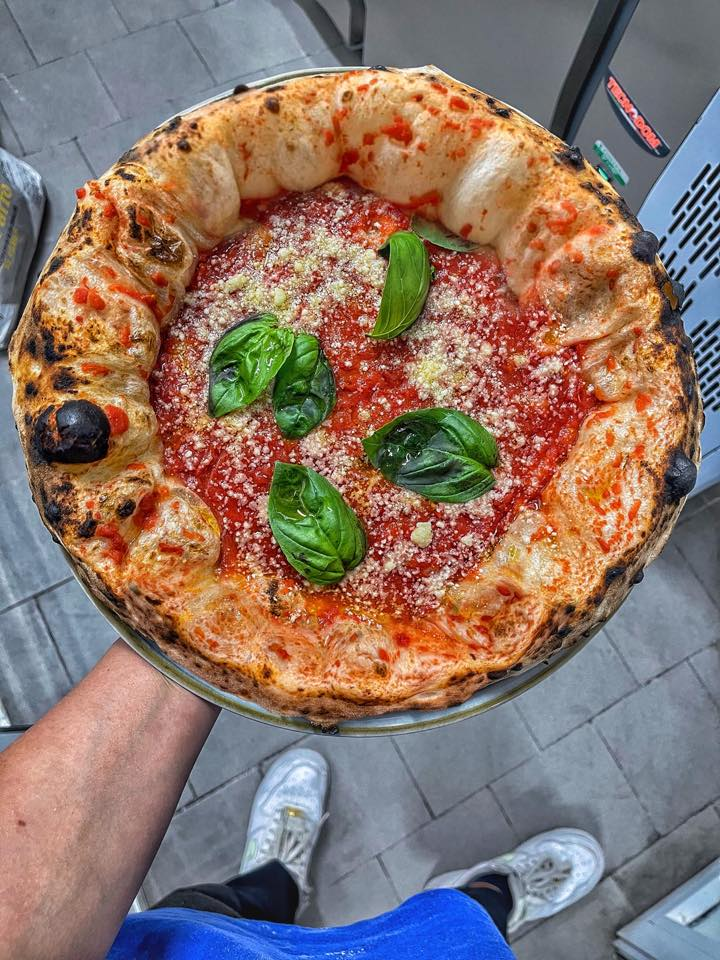

Pizza Contemporanea

Ecco finalmente la ricetta originale così come tramandata da generazioni di pizzaioli
la pizza napoletana deve essere morbida e fragrante
Ingredienti:
- Acqua, 1 litro
- Sale, 40-60g
- Lievito, 0.1-3g
- Farina, 1.6-1.8kg
Procedimento:
- Si versa un litro di acqua nell'impastatrice, si scioglie una quantità di sale marino compresa tra i 40 e i 60 g
- si aggiunge il 10 % della farina rispetto alla quantità complessiva prevista
- successivamente si stemperano il lievito, si avvia l'impastatrice e si aggiunge gradualmente il resto della farina fino al raggiungimento della consistenza desiderata.
Back to the Recipes